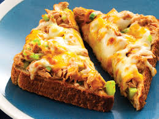

Tuna Melt

Delicious tuna melt recipe
This tuna melt recipe is dedicated to all those chefs who tell you to never, ever mix fish and cheese together; and yet there they are, at the diner at 2:00 in the morning. And you know what they eat? Tuna melts. And the reason they do is because they are delicious.
Ingredients
- 1 (6.6 ounce) jar oil-packed tuna, drained
- 2 tablespoons finely diced celery
- 1 tablespoon minced green onion
- 2 tablespoons capers, drained
- 2 tablespoons mayonnaise, or more to taste
- 1 tablespoon Asian chile pste (such as sambal oelek)
- 1/3 cup fresh mozarella cheese
- salt and ground black pepper to taste
- 2 tablespoons softened butter divided
- 2 thick slices French bread
- 1/4 cup of shredded sharp white Cheddar cheese, divided
- 1 pinch cayenne pepper, or to taste
Steps
- Place tuna into a mixing bowl and lightly break it apart with a fork. Add celery, green onion, capers, mayonnaise, and chile paste. Pinch in small pieces mozzarella and stir to mix. Season with salt and black pepper; refrigerate tuna salad until needed.
- Preheat the oven's broiler. Line a baking sheet with aluminum foil.
- Spread butter generously on both sides of French bread slices.
- Broil buttered bread until golden brown on top, 2 to 3 minutes. Flip bread slices and broil other side until toasted, 2 to 3 more minutes. Remove from the oven and turn bread slices over on the baking sheet so the darkest sides are on the bottom.
- Gently spread tuna salad onto bread slices using 2 forks. Press the salad onto the bread and spread tuna all the way to the edges of the bread. Spread shredded Cheddar over each sandwich. Dust tops with cayenne pepper.
- Place sandwiches under the broiler and cook until cheese is melted and bubbling, 5 to 6 minutes.
- Serve and enjoy!